File
New
Open File...
Save to Storage...
Load from Storage...
Export as JSON...
Import from JSON...
Import MusicXML...
Set Title...
Set Composer...
Set Tonic...
Set Pitch System...
Set Key Signature...
Edit
Apply Slur (Alt+S)
Upper Octave (Alt+U)
Middle Octave (Alt+M)
Lower Octave (Alt+L)
Line
Set Label...
Set Tonic...
Set Pitch System...
Set Lyrics...
Set Tala...
Set Key Signature...
Ornament
Position:
Line: 0, Col: 0 (Lane: 1)
|
Pitch System:
Number
|
Characters:
0
|
No selection
|
Mode: None
Untitled Document
Melody (standalone staff)
Staff group (group header)
Group item (member of group above)
Select Key Signature
×
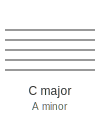
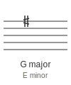
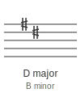
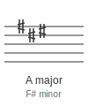
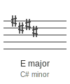
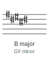
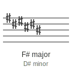
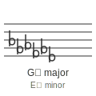
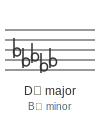
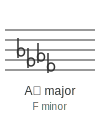
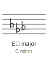
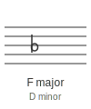
Select Scale Constraint
×
Western
Raga
Maqam
All
🔍
No scales found matching your search